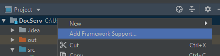

Apache Maven - фреймворк для автоматизации сборки проектов на основе описания их структуры в файлах pom.xml
Некоторые библиотеки добавляют необходимые им зависимости. Рекомендуется добавить все эти зависимости
самостоятельно. Так как если библиотека не видит явной зависимости в pom.xml, она будет добавлена как
неявная зависимость для новой библиотеки:
Зависимость будет добавлена дважды. Возможно с разными версиями.
Библиотеки использующие неявную зависимость могут выбрать не правильную версию и работать неправильно.
Maven Lifecycle:
clean - очищает все сгенерированные файлы.
validate - проверяет правильность конфигурации.
compile - компилирует исходные коды.
test - выполняет тесты.
package - создает инсталляционные пакеты.
verify - проверяет пакеты на целостность.
install - устанавливает пакеты в локальный репозиторий.
site - генерирует документацию и javadoc.
deploy - выкладывает созданные пакеты во внешний репозиторий.
Структура pom.xml
The Basics
groupId
artifactId
version
packaging
dependencies
parent
dependencyManagement
modules
properties - раздел где можно указывать переменные которые можно использовать в дальнейшем через ${x} -
где x это property. Пример:
compile - сборки, тестирования, зависимые пакеты, конечный пакет(будут доступны и во время исполнения).
provided - сборки, тестирования, конечный пакет(будут доступны и во время исполнения).
runtime - тестирования, зависимые пакеты, конечный пакет(будут доступны и во время исполнения)
test - тестирование.
system - область похожа на provided за исключением того, что необходимо определить физическое расположение
артефакта на диске. Артефакт с этой областью видимости maven не ищет в репозитории
import - эта область используется в зависимости секции <dependencyManagement> при сложных связях.
Добавление Maven в проект через Intellij Idea:
Нажать на папку с проектом правой кнопкой мыши.
Выбрать "Add Framework Support"

Выбрать из списка Maven.
RELEASE and LATEST
Использование RELEASE или LATEST в указании версий, не рекомендуется. Так plugin который отвечает за это
не всегда работает исправно. Необходимо указывать конкретную версию.
Maven plugin:
Maven использует JAVA 5. Для plugin можно указать версию в настройках.